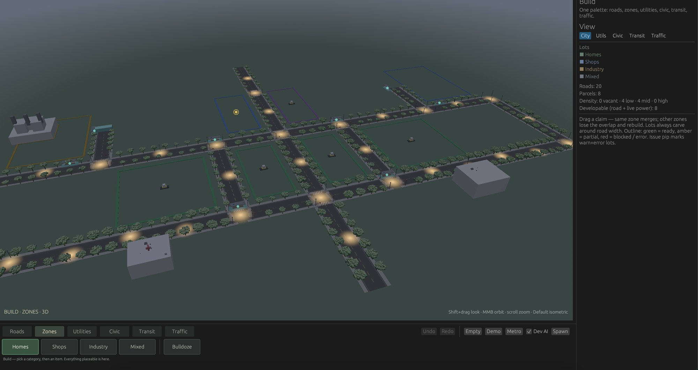
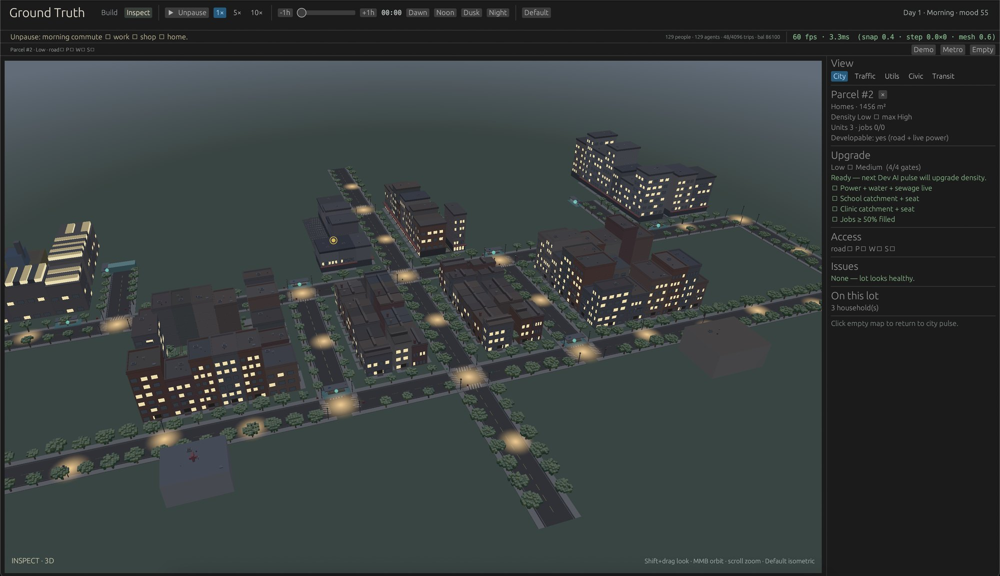
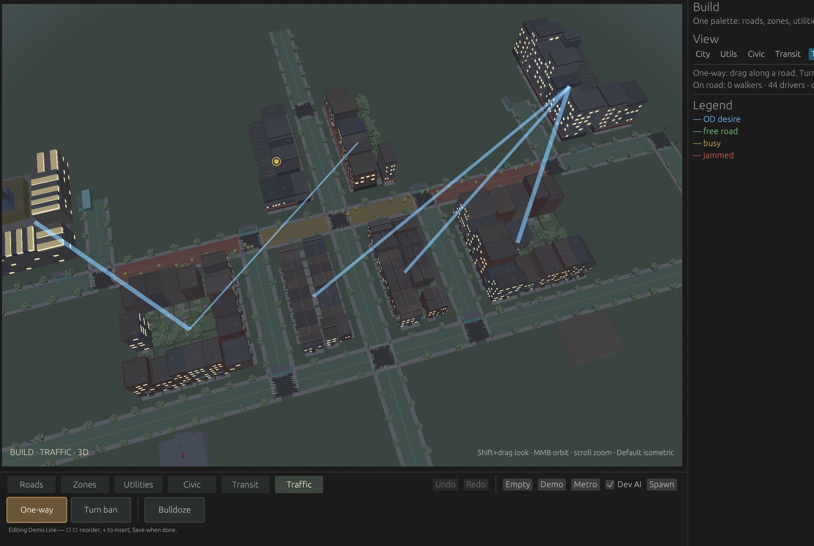
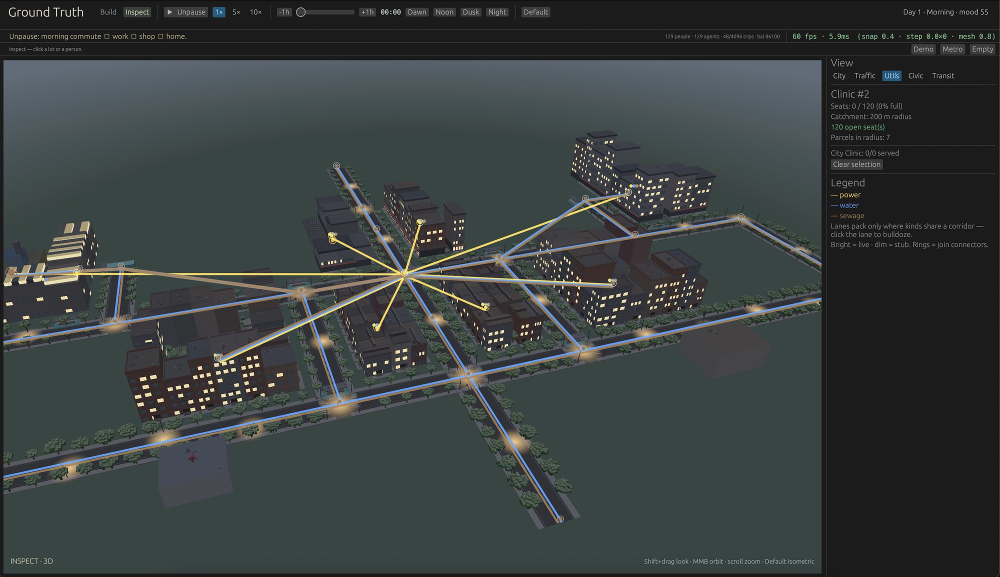
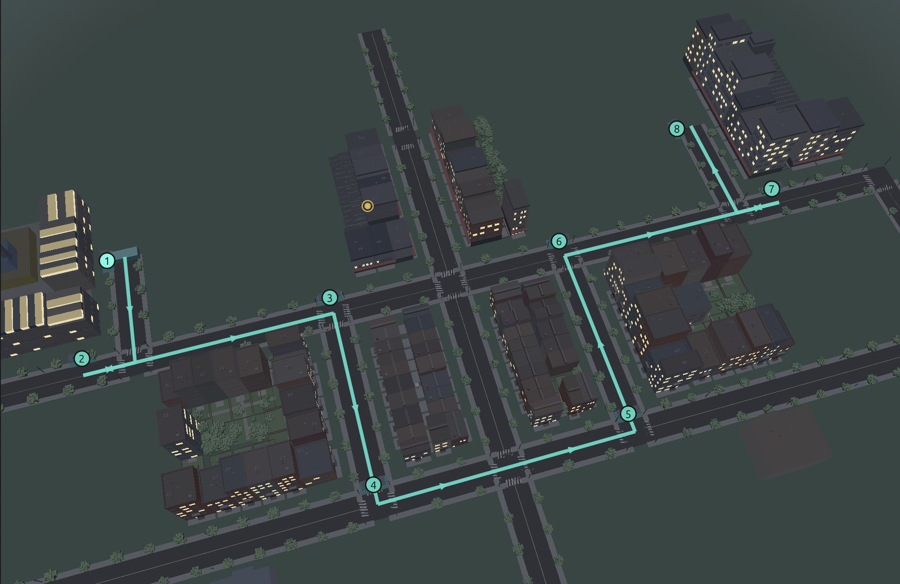
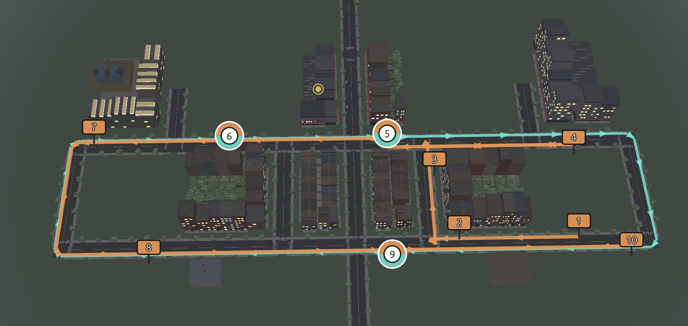

Parcels
Oct 25, 2026
Parcels is a city builder. The parcel is the unit the rest of the city is built from: a lot with an owner, a zoning envelope, a building, and frontage on a road. Households live on it, firms hire on it, trucks deliver to it, and pipes serve it.
Trips, goods, money, and lanes have to add up. A trip has a purpose. A good has inventory. A lane has rules. When a number shows up in the panel, it drills down to the household, the parcel, or the ledger that produced it.
The window title still says Ground Truth. That was the working title in the design notes. The project is Parcels.
You can paint parcels, lay a road graph, zone lots, and run the day. Power, water, sewage, schools, clinics, a developer that builds empty lots, and buses are in. These shots are from that lab.
A lot you can open
Parcel 8 is a shop lot downtown. 1,690 m², zoned High, already at the height the zone allows. Twelve of twenty-four jobs are filled, and the shelf is holding a stock of 8. The issue list says the jobs are underfilled, and it says why the building stops here: the zone max is already High. The lot counts as developable because it has a road and live power.

Zoning is an envelope
Zoning sets what is legal on a lot: which uses, and how tall. Homes, shops, industry, and mixed use are the paints. A claim merges with a neighbor of the same zone. The lot becomes developable once it touches a road and has live power. A green outline means ready, amber means the claim is only partial, red means something is in the way. In this view eight parcels are developable, four of them low density, none mid or high yet.
Empty lots fill in because a developer looks at them. Demand comes from households, rents, and firms, and the building is that response. Up close, a homes lot shows the gates.


Parcel 2 is homes, 1,455 m², three households, density Low with room in the zone to go High. The step up to Medium is four gates, and all four are open: power, water, and sewage are live, a school and a clinic can catch the lot and still have a seat, and at least half the jobs in reach are filled. The panel says the next developer pulse will raise the density. The issue list is empty. The clock on this run is day 1, morning commute.


Where trips want to go
The blue strokes are origin-destination desire. They draw the trips from where they start to where they need to end. Under them, the road graph is lanes and legal movements. One-ways and turn bans are build tools. A path uses a movement the lanes allow. Load on a link becomes delay, and that delay is part of the cost of driving, so a jammed street can send the next person onto their feet or onto a bus.
The road under the cursor in this shot has no walkers and 44 drivers. The legend splits the network into free, busy, and jammed.


Pipes, seats, and a radius
Power and water are networks. Sewage is the third. A plant has capacity, and a conduit can lose pressure on the way, so a lot can be dark while the plant is up. Clinic 2 has 120 seats, none taken, and a catchment of 200 meters. Seven parcels sit inside that radius. A homes lot will not clear its upgrade until a clinic and a school can actually seat someone from there.


Buses on the same roads
A bus line is a sequence of stops snapped to the road graph. The vehicle rides the roads between them. The cyan path below is one route through the grid, stop by stop. From above, the same idea reads as a map: numbered stops, direction along the curb, and a second color where another pattern shares the street. Vehicles have a capacity. Walk, drive, and bus are compared on door-to-door time, and a slow ride loses.




The window is a view of the sim
The simulator is Rust, and it is the authority. It owns households, firms, shipments, the lane graph, the utility networks, transit, and the ledger. A tick is deterministic given the seed and the inputs. The window sends commands, like place a road, set a zone, or follow a person, and reads snapshots and queries. The city lives in the sim.
What you see here is the lab. A winit window, a wgpu pass for the roads and the extruded buildings, and egui for the panels. The buildings are procedural boxes with lit windows, on purpose. Unreal Engine 5 is the later client for a large map, on the same command and snapshot boundary. The sim still runs headless without it.
People are stored at two resolutions. Away from the camera they are cohorts and origin-destination flows. Near the camera, or when you click one, they are a person with a real activity: work, school, shop, home. Inventories, jobs, and money stay conserved either way. A large city stays honest because the residents are real in the books, and only the ones in view are drawn one by one.
I run the lab locally with cargo run -p groundtruth-lab. The invariants run without a window,
cargo test -p groundtruth-sim.
Later
Lane tools are one-ways and turn bans. The ledger is expenses and revenues you can read. A full tax code, rail, ships, and freight contracts are later, and so is the Unreal client. Freight today is trucks restocking shops.
Four things have to stay true on this slice:
- Follow ten people and all ten reach a real destination.
- Something sold in a shop traces back to a shipment.
- Change a turn ban and the routes change.
- A budget hole can be explained from the ledger in a minute.